Client-facing overview of the customer marketplace, partner centre, administration, promotions, checkout and reporting POC.
Version 1.1 — Current POC build
25 August 2026 · Marketplace, catalogue and scheduled-order revision
Document control
Purpose and scope
This document describes the observable functionality of the Halal Delivery proof of concept and provides current screenshots for client review. It covers every application role and the end-to-end flow from discovery through settlement reporting.
FrontendReact + Vite
APIFastify
DataPostgreSQL
POC status. Payment and confirmation email delivery are simulated. All basket pricing, promotions, order accounting and persistence are nevertheless calculated by the server to demonstrate the intended production control boundary.
Contents
Product and role overview
Access, sessions and POC testing
Public landing experience
Restaurant and grocery discovery
Restaurant storefront and menu
Basket, promotions and checkout
Customer account and reviews
Restaurant partner centre
Menu and profile governance
Promotion management
Team invitations
Platform administration
Finance and impact reporting
Business rules and controls
POC boundaries and next steps
Document conventions
“Customer” means an ordering user. “Partner” means a restaurant owner or invited restaurant team member. “Admin” means a Halal Delivery platform operator. Monetary examples use euros and cents.
01 · Product overview
Marketplace and operating roles
Halal Delivery is a multi-sided food-delivery marketplace POC. Customers discover verified halal restaurants and groceries, configure menu items, receive automatic offers, select an optional charity impact allocation and place a simulated paid order. Partners manage their storefront and campaigns. Platform operators govern catalogue changes and reconcile commercial liabilities.
Public visitor
Views the marketing landing page and social-impact proposition.
Searches and filters restaurants and grocery stores.
Views menus, fees, reviews and active offers.
Can register a customer account or sign in.
Customer
Configures products and maintains a restaurant-specific basket.
Receives the best eligible automatic promotion.
Chooses optional impact support and demo payment method.
Views immediate and scheduled orders and reviews confirmed purchases.
Restaurant partner
Views operational status and pending submissions.
Creates categories and submits governed menu/profile changes.
Publishes announcements and automatic promotions.
Invites additional restaurant team members.
Platform administrator
Approves menu and profile submissions.
Invites new restaurant owners.
Manages restaurant commission percentages.
Reviews monthly sales, liabilities, donations and audit detail.
Primary application routes
Route
Purpose
Audience
/
Marketing, location entry, restaurants, impact and causes
Public
/login
Sign in, account creation and POC role selection
All roles
/restaurants
Restaurant and grocery discovery
Public/customer
/restaurant/:slug
Restaurant storefront, menu, basket and checkout
Public/customer
/account
Customer order history and reviews
Customer
/restaurant-portal
Partner overview, menu, profile, offers and team
Partner
/admin
Approvals, invitations, agreements and reporting
Admin
/restaurant-invite/:token
Secure invitation acceptance and account setup
Invited partner
02 · Access and sessions
Authentication and POC role testing
The login experience supports manual email/password authentication, customer self-registration and an optional Google Identity integration. Sessions are stored in secure host cookies and expire automatically.
Public POC testing hub
On a non-loopback development or ngrok host, the login page displays explicit Customer, Admin and Restaurant role buttons. Each button stays on the current public origin, selects a pocRole query parameter and prefills the corresponding demo credentials.
Public-session rule. A public ngrok hostname has one cookie session. Testers must sign out before changing roles and must test roles sequentially.
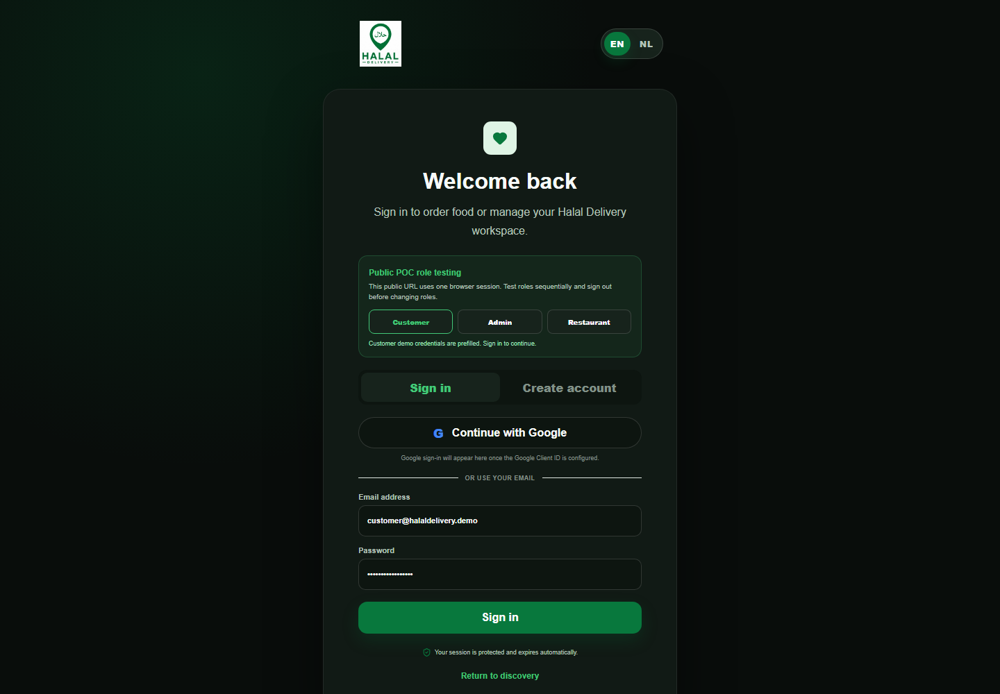
Figure 1 — Public POC login hub with same-origin role selection and customer credentials prefilled.
Local isolated testing
Local development preserves independent sessions by using three loopback hosts:
Role
Local URL
Demo account
Customer
http://127.0.0.1:5173/login
customer@halaldelivery.demo
Administrator
http://127.0.0.2:5173/login
admin@halaldelivery.demo
Restaurant owner
http://127.0.0.3:5173/login
owner@emberandolive.demo
The testing panel and credential prefill are automatically available in development. A production build hides them unless VITE_ENABLE_POC_TESTING=true is explicitly enabled.
03 · Public experience
Landing page and marketplace proposition
The public landing page introduces the marketplace, requests a delivery location and explains how every order can create community impact. The page provides direct navigation to restaurant discovery, the impact story, supported causes, customer login and partner access.
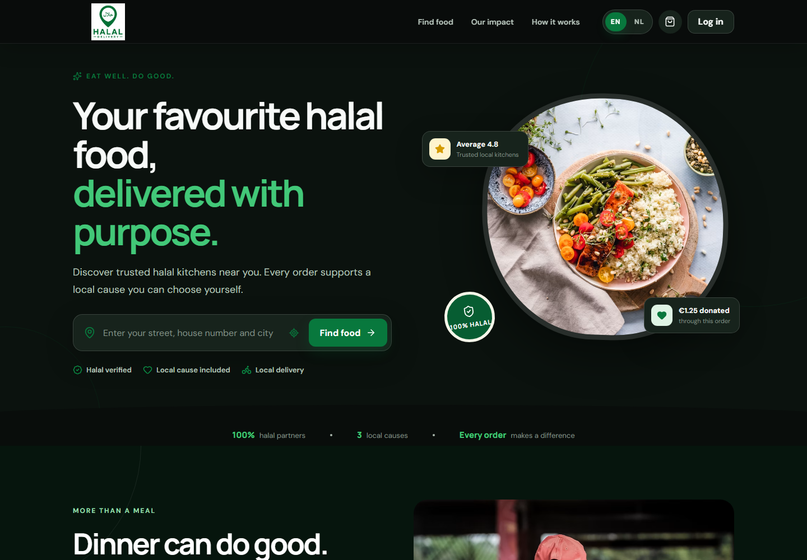
Figure 2 — Public landing page with location search, verified restaurant proposition and social-impact messaging.
Customer proposition
Verified halal marketplace positioning.
Delivery-location entry and restaurant discovery call to action.
Restaurant cards and direct menu navigation.
English and Dutch language controls.
Impact proposition
Explains that donations come from platform commission.
Profiles participating charitable organisations.
Allows customers to select up to three causes at checkout.
Keeps donations separate from restaurant payable amounts.
04 · Discovery
Restaurant and grocery discovery
The discovery screen supports delivery and collection modes, restaurant and grocery business types, address entry, search, sorting and multi-faceted filtering. The corrected brand container keeps the supplied portrait logo fully visible and centred.
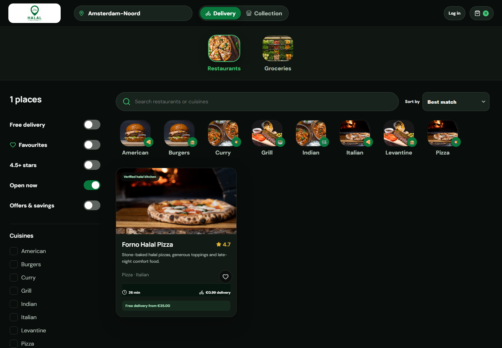
Figure 3 — Restaurant discovery with contained logo, mode switch, cuisine rail, filters and restaurant cards.
Available discovery controls
Find and refine
Search by restaurant, shop, cuisine or grocery category.
Switch between restaurants and groceries.
Filter free delivery, favourites, rating, opening status and offers.
Filter individual cuisines through checkboxes or visual shortcuts.
Compare places
Sort by best match, delivery speed or rating.
View halal verification status and closed status.
Compare delivery estimate, delivery fee and free-delivery threshold.
Favourite and revisit selected restaurants in the current session.
05 · Restaurant storefront
Menu, restaurant information and offers
Each restaurant has a dedicated branded storefront. The hero presents verification, description, rating, delivery estimate, opening hours and the current offer. Customers can open reviews, restaurant information, offer details and a clear fee explanation. The restaurant name, address and professional-trader responsibility statement are repeated in a business-details footer.
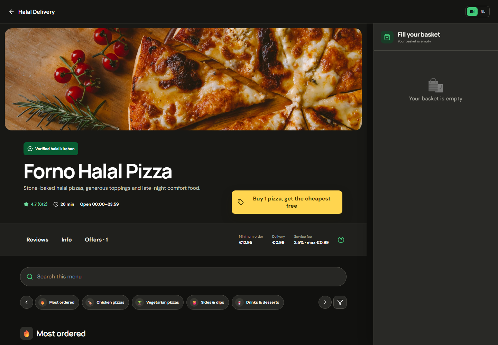
Figure 4 — Restaurant storefront with active offer, fee summary, category navigation, menu and persistent basket.
Menu behaviour
Search across item names and descriptions.
Jump between menu categories and browse responsive product cards.
Show popularity, offer, vegetarian and availability labels.
View ingredients, declared allergens, VAT and availability details.
Keep deactivated items visible but dimmed and prevent them from being ordered.
When an active restaurant is closed, explain that customers can preorder and select a delivery slot for its next opening day.
Recommend a supplementary item after products are added.
05 · Configurable products
Modifiers and customer item notes
Products such as pizzas, burgers, kebabs, meals, drinks and milkshakes can use reusable modifier templates. Required and optional groups are rendered as accessible radio-button or checkbox selections, with extra-price adjustments calculated into the line price.
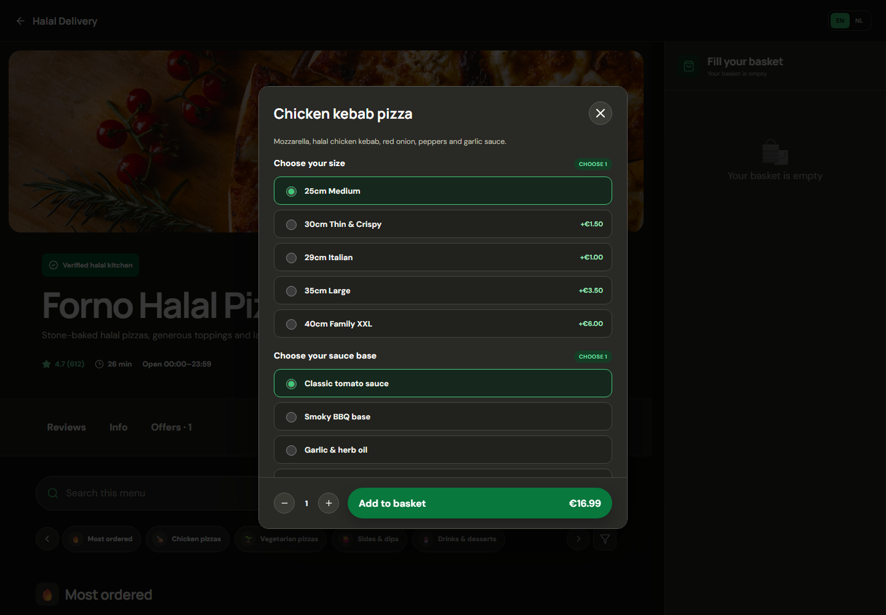
Figure 5 — Product configuration with required size and sauce choices, optional additions, quantity and special instructions.
Configuration rules
Required modifier groups must be completed before the product can be added.
Multiple-choice groups enforce configured maximum selection counts.
Price deltas are shown per option and included in basket/checkout totals.
The same product with different options or notes remains a separate basket line.
Customers may add a free-text instruction of up to 300 characters.
Item notes are explicitly not accepted as allergy declarations.
06 · Promotions
Automatic offer selection
The basket previews eligible automatic promotions as items are added. Quantity campaigns can prompt the customer to add another qualifying item. Announcements are displayed as messages only and never change totals.
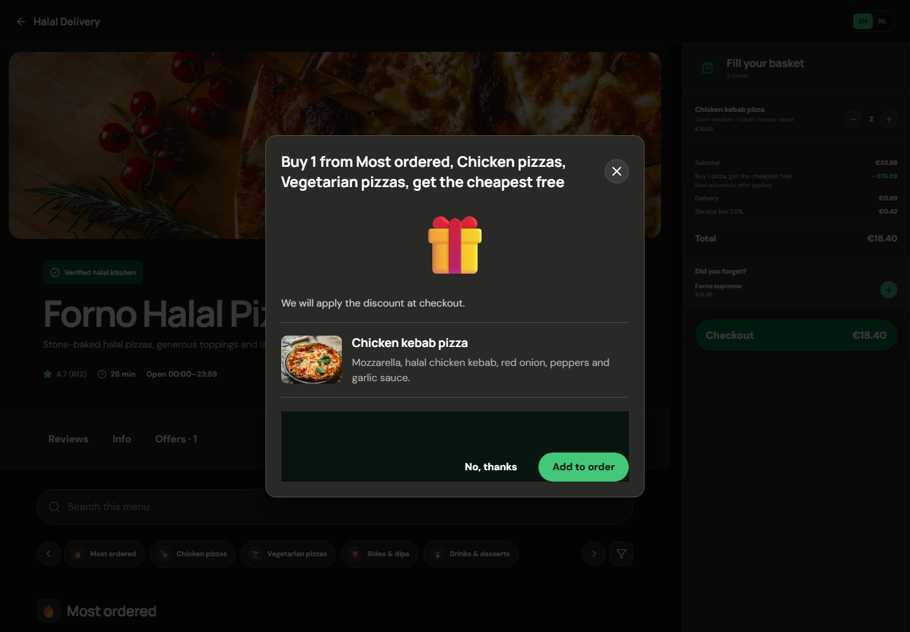
Figure 6 — Quantity-offer prompt with the discounted basket visible behind it.
One-winner stacking policy. The engine evaluates every eligible active order-value and quantity offer, applies only the offer with the greatest customer saving, includes delivery savings in the comparison and resolves equal savings deterministically by promotion ID.
Supported promotion types
Type
Rule options
Financial effect
Promotional announcement
Title, message, enabled state and campaign dates
None
Order-value offer
Percentage, fixed euro amount or free delivery; optional minimum food order
Discounts food or delivery
Quantity offer
Buy/reward quantities, reward percentage and qualifying/reward scopes
Discounts eligible item units
06 · Checkout
Order review, impact and payment simulation
The checkout drawer consolidates order review, the optional impact choice and payment selection in one flow. It shows the selected promotion, exact savings, delivery and service fees, and the final server-payable amount.
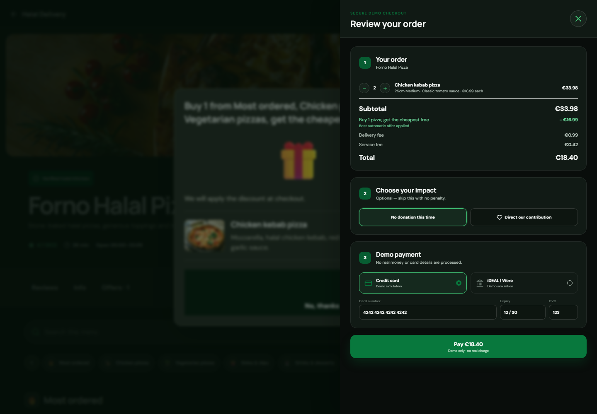
Figure 7 — Checkout review with a buy-one-get-one discount, optional charity contribution and simulated payment.
Authoritative checkout sequence
1. Send item IDs, quantities, modifiers and note snapshots
›
2. Reload menu prices and active rules on the server
›
3. Select one best automatic offer
›
4. Reconcile payment and settlement totals
Basket savings are previews only; the server never trusts a client-provided saving.
Percentage offers are rounded deterministically and fixed discounts cannot reduce food subtotal below zero.
Free-delivery offers zero the actual otherwise-payable delivery fee.
Service fee, commission, payment fee, donation basis, restaurant payable and platform fee are recomputed from discounted values.
Credit card and iDEAL/Wero are demonstration choices; no real payment credentials are processed.
A successful POC payment creates an order, order-item snapshots, promotion snapshot and confirmation-email simulation.
07 · Customer account
Order history, receipts and reviews
Signed-in customers can open their account to see confirmed orders. Each record retains restaurant and item details, gross payment, donation amount, email status and the applied promotion title and savings.
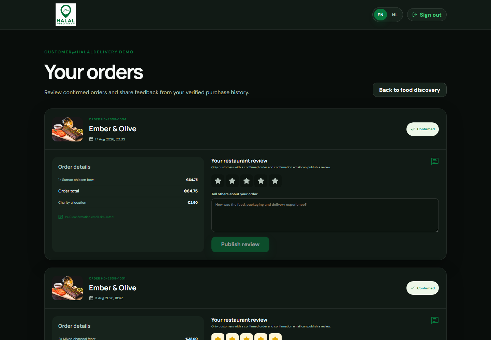
Figure 8 — Customer account with confirmed order history, totals and review state.
Review eligibility
Only the customer who placed the order may submit its review.
The order must be confirmed and its confirmation email must be recorded as sent.
A customer can review each eligible order once and can update that review.
Verified-order ratings contribute to restaurant ratings shown in discovery and the storefront.
08 · Partner centre
Restaurant operational overview
The partner centre is a role-protected workspace with five sections: Overview, Menu manager, Restaurant profile, Offers and Team members. The overview gives a concise operational status and routes the owner to common tasks.
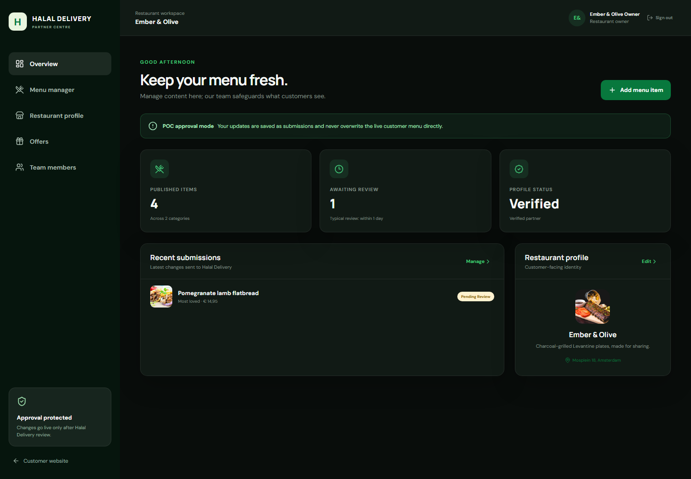
Figure 9 — Partner overview showing published items, submissions awaiting review and profile verification.
Overview information
Published item count and category count.
Number of catalogue or profile submissions awaiting admin review.
Halal/profile verification status.
Recent submissions with category, price and workflow status.
Customer-facing restaurant profile preview.
Governance model. Catalogue and profile submissions are stored separately from live customer content. They go live only after an administrator approves them.
09 · Menu governance
Categories and menu submissions
Partners can create and rename menu categories immediately for use inside the workspace. New menu items enter a governed review workflow and do not overwrite the published customer menu. Published items also have an immediate operational Activate/Deactivate control, independent of content approval.
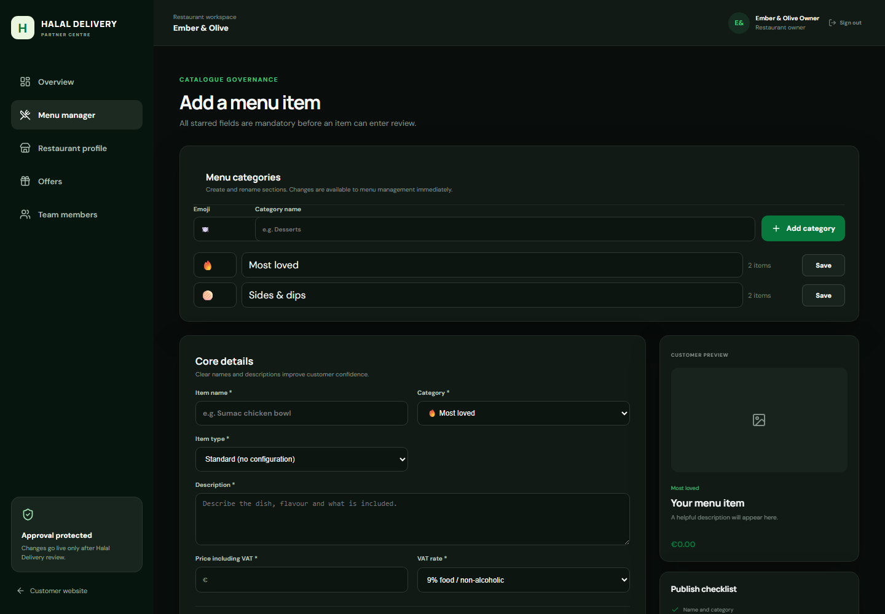
Figure 10 — Menu manager with category controls, menu-item form, validation checklist and customer preview.
Menu item data
Commercial and display
Name, category and useful description.
Price including VAT and a 9% or 21% VAT classification.
Availability window, vegetarian flag and landscape image URL.
Customer preview before submission.
Food safety and configuration
Ingredient declaration and EU 14 allergen selection.
Standard or configurable item type.
Reusable modifier template with editable groups/options.
Required/default options and bounded extra prices.
Immediate availability control. Deactivation does not delete or rewrite approved catalogue content. The item remains visible to customers with an “Unavailable” state, while add-to-basket and authoritative checkout validation both block it.
09 · Profile governance
Restaurant profile and checkout settings
Partners can propose updates to the customer-facing brand, address, operating hours and fee settings. Submitted changes follow the same approval trail as menu items.
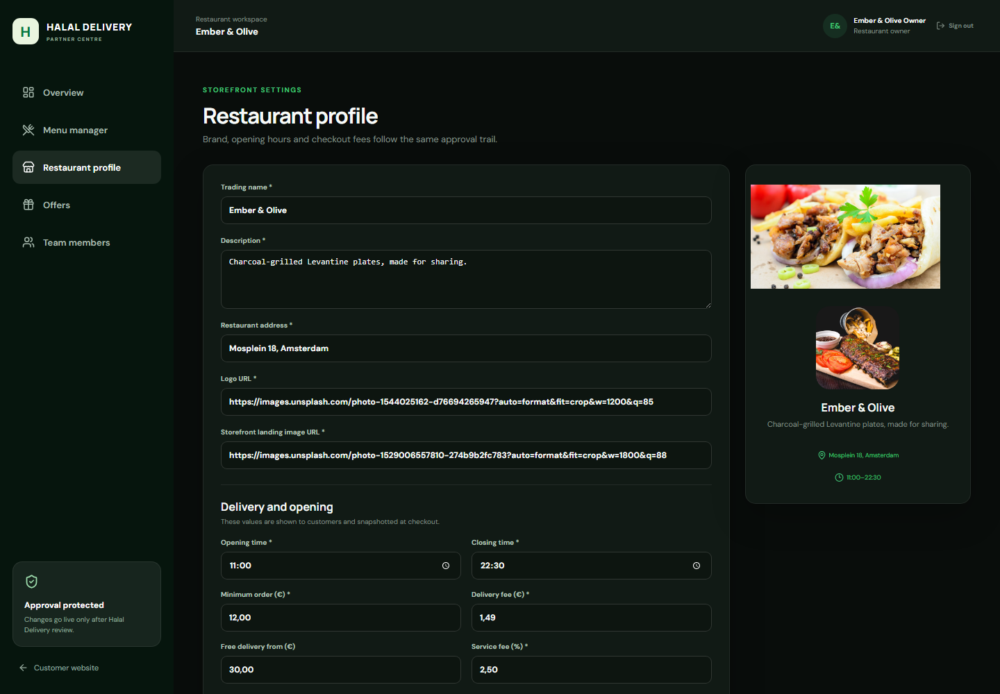
Figure 11 — Restaurant profile editor with brand, opening, delivery and service-fee settings.
Managed profile fields
Trading name, description and restaurant address.
Logo URL and storefront landing image URL.
Opening and closing times.
Minimum food-order amount and delivery fee.
Optional free-delivery threshold.
Percentage service fee and maximum service-fee cap.
Approved values are shown to customers and snapshotted at checkout so historical orders remain explainable even after profile settings change.
10 · Campaigns
Promotion guidance and campaign calendar
The Offers workspace contains a built-in guide, worked examples, a campaign editor and a calendar of existing campaigns. Promotions publish directly for the POC and are visible only when enabled and within their configured start/end window.
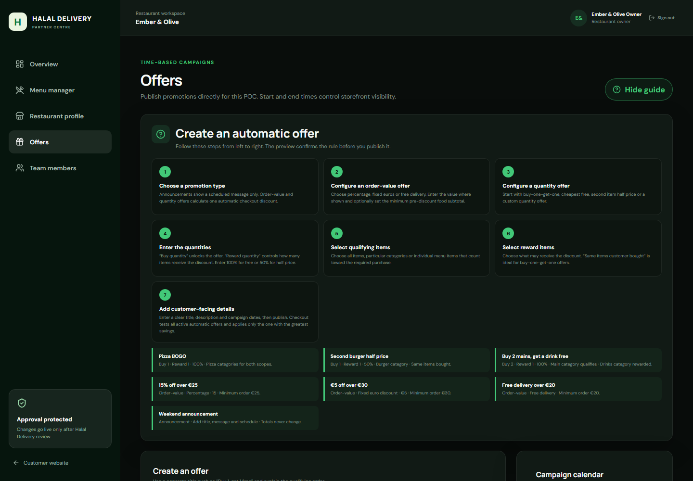
Figure 12 — “How offers work” guidance with order-value, quantity and message-only examples.
Message-only announcements
A promotional announcement is a distinct campaign type for scheduled storefront messages such as “Something special is coming this weekend”. The interface explicitly states that announcements never affect basket or checkout totals. Legacy manual order_offer records are treated as announcements for backward compatibility.
10 · Automatic order-value offers
Percentage, fixed amount and free delivery
Partners can create automatic order-value campaigns using explicit, validated financial rules. An optional minimum is always evaluated against the eligible pre-discount food subtotal.
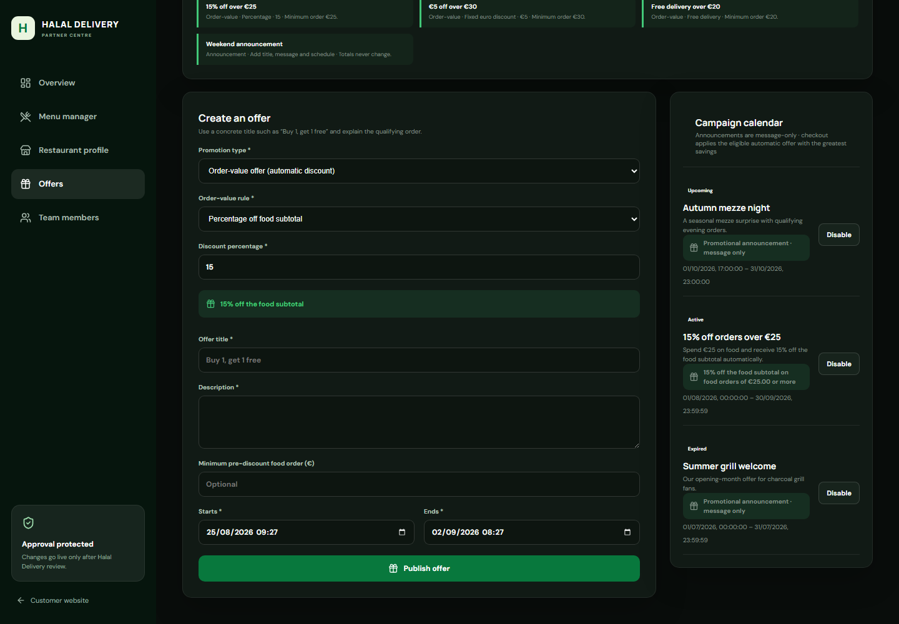
Figure 13 — Order-value promotion editor with rule selection, threshold, schedule and campaign preview.
Rule
Validation
Calculation
Percentage off food
Whole percentage from 1 to 100
Percentage of eligible food subtotal, deterministically rounded
Fixed euro discount
Positive value, bounded to €1,000 in portal input
Fixed cents capped at the food subtotal
Free delivery
No discount value; optional non-negative minimum
Removes the delivery fee that would otherwise be charged
Quantity-offer configuration
Quantity offers provide buy-one-get-one, cheapest-free, second-item-half-price and custom presets. Partners configure buy quantity, reward quantity, reward percentage and qualifying/reward scope across the whole menu, selected categories or selected items.
11 · Restaurant team
Team-member invitations
Restaurant owners can invite additional workspace users through a secure, single-use link. The invitation is tied to the restaurant and intended role, expires after seven days and requires the invited user to choose a password.
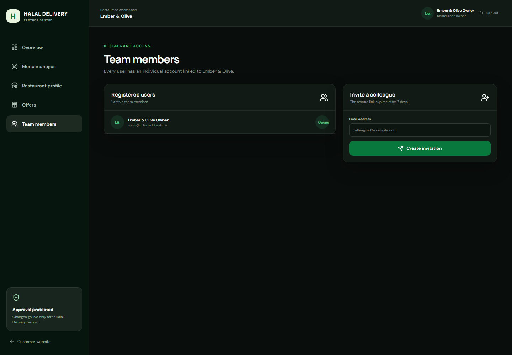
Figure 14 — Team member list and secure invitation creation.
Invitation flow
Owner enters team email
›
Server issues a single-use token
›
Owner shares generated link
›
Invitee creates account and enters portal
The generated link can be copied from the workspace.
Existing and invited team members are visible to the owner.
The invited account is linked to the correct restaurant before portal redirection.
12 · Platform administration
Approval centre and commercial terms
The admin workspace presents pending catalogue and profile work alongside restaurant onboarding and commercial controls. Platform operators can review validated menu submissions and publish them to the customer storefront.
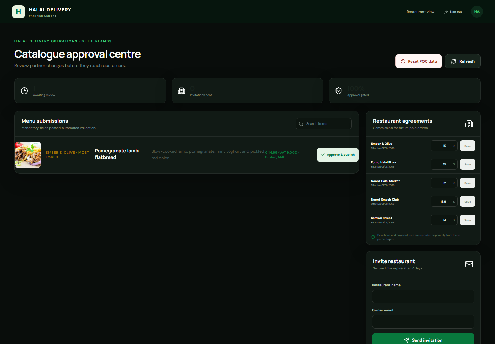
Figure 15 — Admin approval centre with queue metrics, menu review, restaurant invitation and commission agreements.
Administrative functions
Governance
Search and approve menu submissions.
Approve customer-facing profile changes.
See allergens, VAT and price before publication.
Refresh the approval queue on demand.
Commercial operations
Create seven-day restaurant-owner invitations.
Set commission percentage per restaurant.
See pending and sent invitation counts.
Reset deterministic POC data only after explicit confirmation.
POC reset protection. Reset is deliberately destructive to POC-tagged data and requires a browser confirmation plus the server confirmation phrase. It is not part of normal operations.
13 · Finance and impact
Monthly settlement report
The monthly report turns paid-order snapshots into a traceable operational ledger. It distinguishes cash received from liabilities and platform revenue, and can be printed for settlement review.
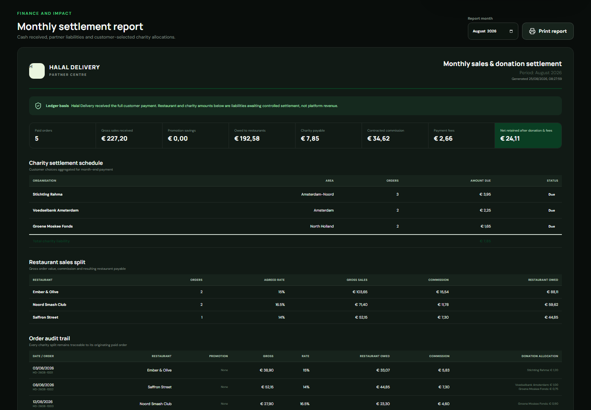
Figure 16 — Monthly summary, charity schedule, restaurant sales split and order audit trail.
Report contents
Paid-order count and gross sales received.
Total customer promotion savings, including delivery savings.
Restaurant payable, charity payable, contracted commission and payment fees.
Net amount retained after donations and payment fees.
Charity settlement schedule with contributing-order count and payout status.
Restaurant sales split by order count, agreed rate, gross, commission and amount owed.
Order-level audit trail with promotion snapshot and donation allocation.
14 · Financial controls
Settlement and reconciliation rules
Every confirmed order stores enough immutable information to explain the customer payment and downstream settlement. The API rejects a checkout if its financial invariants do not reconcile.
Core reconciliation
Value
Rule
Original food subtotal
Sum of authoritative menu prices, modifier deltas and quantities before promotion
Discounted food subtotal
Original food subtotal less the selected food-promotion saving, never below zero
Delivery payable
Configured delivery fee less free-delivery saving, never below zero
Gross/payment amount
Discounted food subtotal + delivery payable + capped service fee
Commission
Restaurant agreement percentage applied to discounted food subtotal
Optional share of platform commission; never deducted from restaurant payable
Payment fee
Calculated from the discounted gross/payment amount
Stored order snapshot
Original and discounted food subtotals.
Food-promotion and delivery-discount amounts.
Applied promotion ID, title and type.
Delivery fee, service fee, gross paid, commission and payment fee.
Restaurant payable, platform fee and donation allocations.
Item names, quantities, configured option summaries and customer notes.
Future payment integration. A Stripe PaymentIntent or other real payment request must use the server-reconciled gross amount. The client basket remains a preview and must never define the amount charged.
14 · Controls and quality
Validation, security and compatibility
Role and session controls
API paths enforce customer, partner or admin role requirements.
Password hashes use Argon2.
Session cookies are host-only and expire automatically.
Invitation tokens are single use and time limited.
Promotion validation
Percentage must be 1–100.
Fixed cents must be positive and bounded.
Minimum order must be non-negative.
Dates must be valid and end after start.
Malformed type/rule combinations are rejected.
Catalogue validation
Required names, descriptions, price, VAT and image URL.
Ingredient and allergen review data.
Bounded modifier groups, options, defaults and price deltas.
Approval isolation between submission and published record.
Backward compatibility
Legacy order_offer rows continue to load.
Legacy manual rows map to message-only announcements.
Database additions use compatible schema evolution.
Historical order snapshots do not depend on current rules.
Language and responsive behaviour
The customer-facing landing, login, storefront, basket and checkout expose English/Dutch controls. Major customer screens adapt to desktop and mobile layouts. Interactive controls use labels, semantic buttons and visible focus/selection states; modal surfaces identify themselves as dialogs.
Fixed development services
Service
Endpoint
Port policy
Web application
http://127.0.0.1:5173
Fixed; Vite fails rather than choosing another port
Application API
http://127.0.0.1:3001
Fixed
PostgreSQL
localhost:55433
Fixed host mapping
15 · POC boundaries
Current limitations and production follow-up
The POC demonstrates the intended user journeys, governance model and financial calculations. The following integrations and operational capabilities remain outside the current scope.
Area
Current POC behaviour
Production follow-up
Payments
Simulated card and iDEAL/Wero confirmation
Payment provider, webhooks, refunds, disputes and payout controls
Email
Confirmation status recorded as simulated/sent
Transactional provider, templates, retries and delivery events
Google sign-in
Available only when a Google client ID is configured
Production OAuth origins, consent and account-linking policy
Media
Image URLs are entered directly
Managed upload, moderation, resizing and storage
Operations
Immediate orders plus server-validated next-opening preorders in 15-minute slots
Live order dispatch, preparation workflow, courier tracking and cancellation
Location
POC geocoding and seeded delivery radii
Address validation, routing, distance pricing and coverage rules
Compliance
Functional allergen, VAT and halal-status fields
Legal review, privacy, retention, audit policy and certification workflow
Reporting
Monthly operational ledger and print view
Exports, accounting integration, payout batches and reconciliation exceptions
Client acceptance focus
Confirm the public customer journey, wording and visual identity.
Confirm the three promotion types and one-winner stacking policy.
Confirm commercial settlement definitions and donation treatment.
Confirm next-opening preorder slots, vegetarian labels and operational item availability.
Prioritise production integrations and operational workflows.
Public POC endpoint at document creation: https://contrastively-xanthophyllous-dung.ngrok-free.dev/login?pocRole=customer The ngrok hostname is temporary and may change when the development tunnel restarts.
Appendix A
Demonstration accounts
These accounts are intentionally seeded for POC demonstrations and must not be used as production credentials.
Role
Email
Password
Expected landing
Customer
customer@halaldelivery.demo
CustomerDemo!2026
/restaurants
Restaurant owner
owner@emberandolive.demo
RestaurantDemo!2026
/restaurant-portal
Platform admin
admin@halaldelivery.demo
AdminDemo!2026
/admin
Screenshot register
Figure
Screen
Key functionality evidenced
1
Public POC login
Same-origin role buttons, prefill and sequential-session warning
2
Landing page
Marketplace proposition, location and impact
3
Discovery
Corrected logo, filters, cards and service modes
4
Storefront
Menu, offer, fees, opening and basket
5
Product options
Modifiers, price deltas, quantity and notes
6
Promotion prompt
Quantity reward and basket discount preview
7
Checkout
Promotion, impact, payment and final total
8
Customer account
Order history, receipt data and review eligibility
9–14
Partner centre
Overview, menu, profile, campaigns and team
15–16
Admin
Approvals, commercial terms and monthly settlement